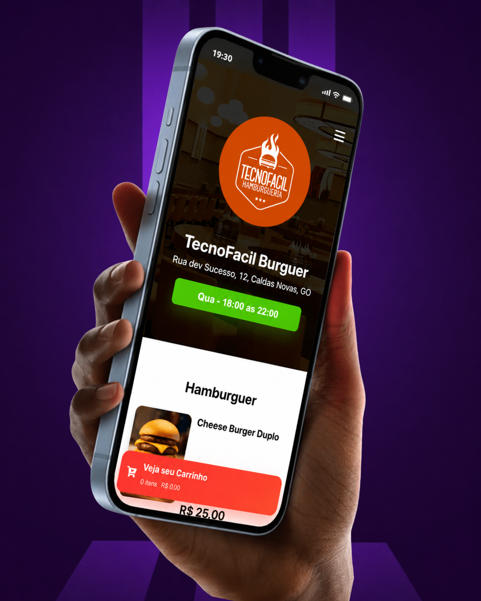

Alguns sites desenvolvidos pela TecnoFacil
Na TecnoFacil , a criação de sites vai muito além de apenas montar páginas bonitas. Nós desenvolvemos sites estratégicos, modernos e responsivos, pensados para fortalecer a presença digital da sua empresa e transformar visitantes em clientes.
Ver seçãoProjetos Web desenvolvidos

Site - Use Luume
A TecnoFacil desenvolveu o site da Use Luume com o objetivo de fortalecer a presença digital da marca e transmitir toda a elegância e sofisticação das suas peças.
Abrir projeto
Cardápio Digital | TecnoFacil
O cardápio digital é uma solução moderna e prática para restaurantes, bares e estabelecimentos do setor de alimentação. Pensando nisso, a TecnoFacil desenvolveu um cardápio digital.
Conhecer projetoSite - Jornada
Esse site foi desenvolvido com a proposta inicial, para demosntração de teste, sem nem um vinculo comercial.
Ver mais